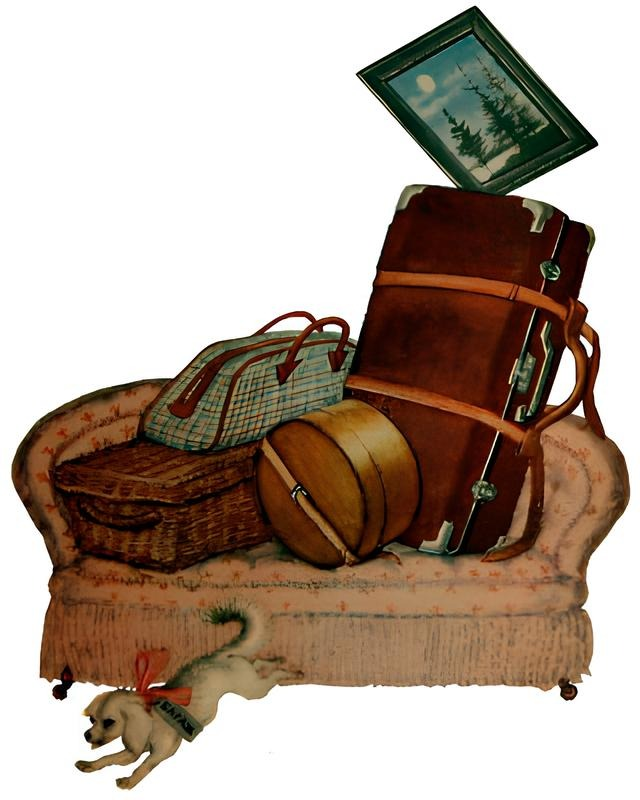
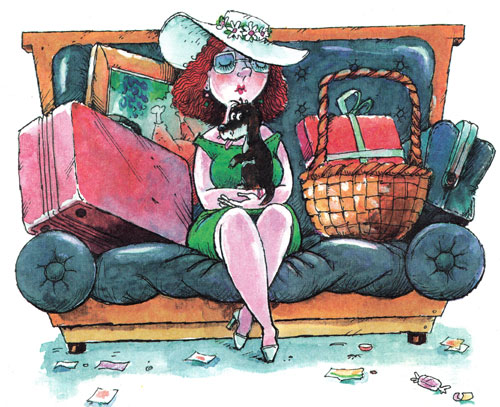
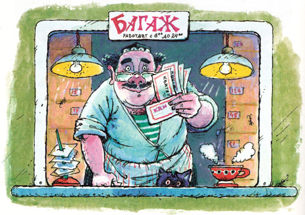
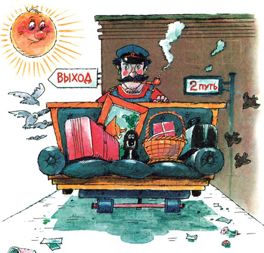
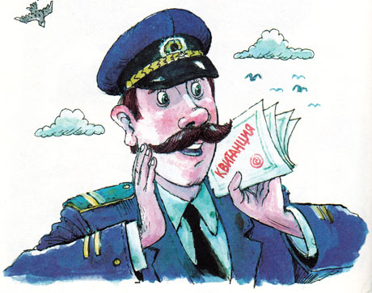
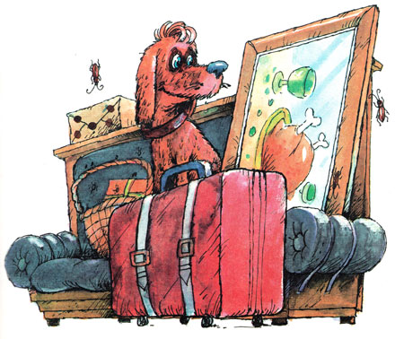
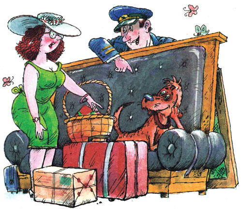

Багаж.
Самуил Маршак
Дама сдавала в багаж
Диван,
Чемодан,
Саквояж,
Картину,
Корзину,
Картонку
И маленькую собачонку.

Выдали даме на станции
Четыре зеленых квитанции
О том, что получен багаж:
Диван,
Чемодан,
Саквояж,
Картина,
Корзина,
Картонка
И маленькая собачонка.

Вещи везут на перрон.
Кидают в открытый вагон.
Готово. Уложен багаж:
Диван,
Чемодан,
Саквояж,
Картина,
Корзина,
Картонка
И маленькая собачонка.

Но только раздался звонок,
Удрал из вагона щенок.
Хватились на станции Дно:
Потеряно место одно.
В испуге считают багаж:
Диван,
Чемодан,
Саквояж,
Картина,
Корзина,
Картонка…
— Товарищи! Где собачонка?

Вдруг видят: стоит у колес
Огромный взъерошенный пес.
Поймали его — и в багаж,
Туда, где лежал саквояж,
Картина,
Корзина,
Картонка,
Где прежде была собачонка.

Приехали в город Житомир.
Носильщик пятнадцатый номер
Везет на тележке багаж:
Диван,
Чемодан,
Саквояж,
Картину,
Корзину,
Картонку,
А сзади ведут собачонку.
Собака-то как зарычит,
А барыня как закричит:
— Разбойники! Воры! Уроды!
Собака — не той породы!
Швырнула она чемодан,
Ногой отпихнула диван,
Картину,
Корзину,
Картонку…
— Отдайте мою собачонку!

— Позвольте, мамаша! На станции,
Согласно багажной квитанции,
От вас получили багаж:
Диван,
Чемодан,
Саквояж,
Картину,
Корзину,
Картонку
И маленькую собачонку.
Однако
За время пути
Собака
Могла подрасти!